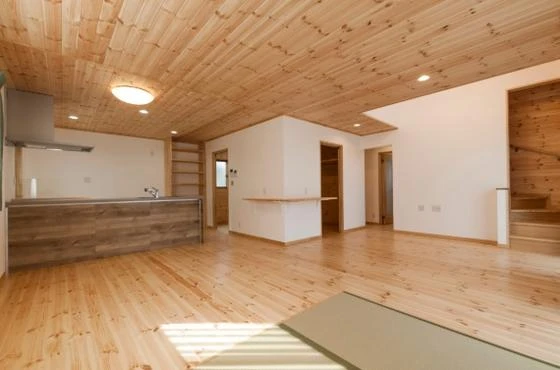
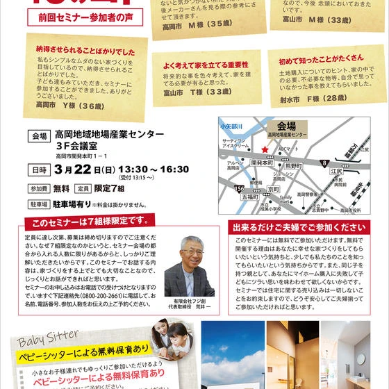
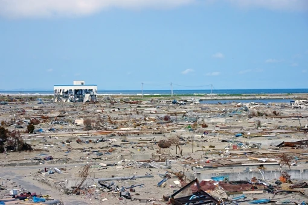
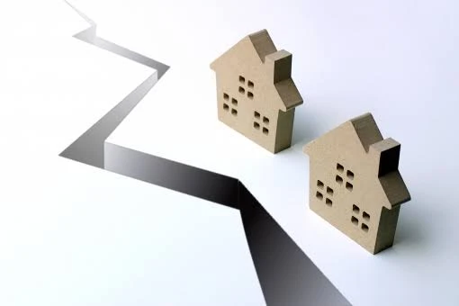

【富山県 家づくり】全期間固定金利商品を選ぶ際の3つの注意点④
こんにちは、富山県で自然素材にこだわるホンモノの家。フジ創アイノスです。 今回も全期間固定型の住宅ローンの注意点についての話をさせていただきます。 ▼注意点その3：借り過ぎてしまう・・・ 最も怖い失敗は借り過ぎてしまうこ
続きを読む →FUJISOU AINOS JOURNAL
家づくりのこと、暮らしのこと。
日々の想いを、お伝えします。
家づくりについて 556件 ／ 新しい記事から 20・24ページ
こんにちは、富山県で自然素材にこだわるホンモノの家。フジ創アイノスです。 今回も全期間固定型の住宅ローンの注意点についての話をさせていただきます。 ▼注意点その3：借り過ぎてしまう・・・ 最も怖い失敗は借り過ぎてしまうこ
続きを読む →こんにちは、富山県で自然素材にこだわるホンモノの家。フジ創アイノスです。 今回も全期間固定型の住宅ローンの注意点についての話をさせていただきます。 注意点その2：どこの銀行でも金利が同じくらいではない・・・ これは、全期
続きを読む →こんにちは、富山県で自然素材にこだわるホンモノの家。フジ創アイノスです。 前回お話した通り全期間固定型の住宅ローンの注意点についての話をさせていただきます。 ▼注意点その1：初期費用が余分にかかる・・・ まず1つ目の注意
続きを読む →
こんにちは、富山で自然素材にこだわるホンモノの家。フジ創アイノスです。 【フジ創の建てたおうち】で紹介している施主様邸の施工事例を紹介します。 ▼木の空間演出~太陽を迎えるおうち こちらのおうちの一番のポイントは 「光」
続きを読む →こんにちは、富山県で自然素材にこだわるホンモノの家。フジ創アイノスです。 金利は安ければ安いほど支払利息が少なくなります。 それゆえ、より多くの資金を銀行から借入れしなければいけない人ほど 本来は金利が安い商品を選ぶべき
続きを読む →こんにちは、富山県で自然素材にこだわるホンモノの家。フジ創アイノスです。 人気の北側道路を選ぶと 景観が不細工 になりがちです。前回は、 家の正面となる北面が ゴチャゴチャしてしまいやすい という話をしました。 部屋は南
続きを読む →こんにちは、富山県で自然素材にこだわるホンモノの家。フジ創アイノスです。 一般的に 南側道路の土地 が、最も良い土地であると言われています。 事実、最も人気がある土地であり、最も高く値段が設定されているのですが、 実際は
続きを読む →こんにちは、富山県で自然素材にこだわるホンモノの家。フジ創アイノスです。 休校期間 が延長 となりＧＷ明けまでは おうちでの暮らし が大変重要 です。 メリハリのある生活を送らせる。運動不足、勉強不足を解消する。 そんな
続きを読む →こんにちは、富山県で自然素材にこだわるホンモノの家。フジ創アイノスです。 休校期間が延長 となりＧＷ明けまでは おうちでの暮らし が大変重要 です。 メリハリのある生活を送らせる。運動不足、勉強不足を解消する。 そんなお
続きを読む →こんにちは、富山県で自然素材にこだわるホンモノの家。フジ創アイノスです。 「子供部屋は一階と二階どちらに設けるのが好ましいか」 という話題で 子供部屋が一階にあるとリビングダイニングはスッキリ保ちやすくなるし、 モノがな
続きを読む →
次回 ４月２６日（日）高岡市 開催決定 !! こんにちは、富山で自然素材にこだわるホンモノの家。フジ創アイノスです。 より多くの方に新しい家づくりの考えを培って頂きたいという想いから 前回参加者のセミナーに参加しての感想
続きを読む →こんにちは、富山で自然素材にこだわるホンモノの家。フジ創アイノスです。 「子供部屋は一階と二階どちらに設けるのが好ましいか」 という話題で 一階につくるデメリットとして「子供たちのプライバシーを確保できない」 ということ
続きを読む →こんにちは、富山で自然素材にこだわるホンモノの家。フジ創アイノスです。 小中学生の臨時休校が終わり、ほっとしているお母さんが多いのではないでしょうか 春休みまでつかの間かもしれませんが、子供が中でじっとしているなんてあり
続きを読む →
こんにちは、富山で自然素材にこだわるホンモノの家。フジ創アイノスです。 ▼９年前の3月11日14時46分 あなたはなにをしていましたか？ 私はアルバイト帰りに東京渋谷スクランブル交差点にいました。 異様なふらつきの感覚か
続きを読む →
こんにちは、富山で自然素材にこだわるホンモノの家。フジ創アイノスです。 収入が年金だけになる 老後の生活 。老後のことを考えると、 誰しもがマイホームを持っておくべき であると言えます。 前回は、家づくりの予算設定には
続きを読む →こんにちは、富山で自然素材にこだわるホンモノの家。フジ創アイノスです。 収入が年金だけになる 老後の生活 。老後のことを考えると、 誰しもがマイホームを持っておくべき であると言えます。 前回は、家づくりの予算設定には
続きを読む →こんにちは、富山で自然素材にこだわるホンモノの家。フジ創アイノスです。 収入が年金だけになる 老後の生活 。みなさんはどうお考えですか？ 老後のことを考えると、 誰しもがマイホームを持っておくべき であると言えます。 マ
続きを読む →こんにちは、富山で自然素材にこだわるホンモノの家。フジ創アイノスです。 収入が年金だけになる 老後の生活 。みなさんはどうお考えですか？ 年金生活になった後も 賃貸物件 を借り、家賃を払いながらの生活を想像すると 「現実
続きを読む →
こんにちは、富山で自然素材にこだわるホンモノの家。フジ創アイノスです。 急な温度差が原因で、心筋梗塞や脳梗塞などを引き起こす「ヒートショック」 あまりに多くの人が「住宅はこうあるべき」という固定概念に縛られている現実があ
続きを読む →こんにちは、富山で自然素材にこだわるホンモノの家。フジ創アイノスです。 急な温度差が原因で、心筋梗塞や脳梗塞などを引き起こす「ヒートショック」 その原因となる要素は一体何なのでしょうか？ ▼日当たりが良いところに部屋をつ
続きを読む →こんにちは、富山で自然素材にこだわるホンモノの家。フジ創アイノスです。 みなさんは 「ヒートショック」 という言葉はご存知ですか？ 「ヒートショック」急な温度差が原因で、 です。 ヒートショックによる死亡件数は、入浴中の
続きを読む →
こんにちは、富山で自然素材にこだわるホンモノの家。フジ創アイノスです。 家を建てることの大きな目標として、住む人が健康になり、 末永く暮らし続けることが挙げられます。だからこそ安全で安心な家を 誰もが求めています。 He
続きを読む →
こんにちは、富山で自然素材にこだわるホンモノの家。フジ創アイノスです。 実は近年、木から生まれた最新技術があります。 木の強さの成分であるセルロースからつくられた新素材は、 鉄の5分の１の軽さで、強度は鋼鉄の５倍あります
続きを読む →
こんにちは、富山で自然素材にこだわるホンモノの家。フジ創アイノスです。 日本には八百万の神がいて、万民を見守ってくれているという思想が根付いています。 だからこそ、様々な自然の恵みに対しても感謝の念を忘れません。 家を建
続きを読む →